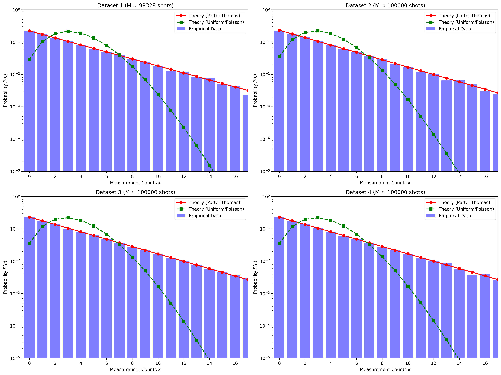

接入客户数据
任务/轨迹摘要、成功率、失败率、难度、场景标签或 RLDS 导出摘要。
CSV · JSON · RLDS summary客户给出任务、频次、成功率与风险画像；Q-Tail 用量子 Porter-Thomas 重尾先验重新分配合成预算，让罕见、高风险、极端失败任务获得更多训练数据，并交付可审计的数据计划与 API 结果包。
服务不改客户策略网络，也不要求先重做整个训练栈。第一阶段先识别覆盖盲区，再用 Open X 训练得到的尾部分位校准曲线生成同预算数据计划。
任务/轨迹摘要、成功率、失败率、难度、场景标签或 RLDS 导出摘要。
CSV · JSON · RLDS summary统一任务字段，计算 rarity、failure risk、difficulty 与 tail score。
task_profiles.csv把 Porter-Thomas 权重映射到高 tail score 任务，并应用 Open X 训练出的分位增益曲线。
OpenX-calibrated allocation输出场景规格、数量、预算份额、同预算对比、model card 与审计 manifest。
delivery package · API response训练覆盖与分配学习是直接证据；tail success、CVaR 和极端失败来自同预算响应模型协议评测。真正的策略收益仍需客户在同一 policy、同一环境、同一步数下复训确认。
171.622 GiB 完整文件进入 Strong 训练；partial 文件被完整性门禁排除。
20,000 步分配头学会把预算从高频头部转向记录级高风险 tail shard。
同任务集、同 100,000 数据预算、同响应模型和同指标集；不是端到端机器人策略训练。
最差 20% 任务的平均效果改善，用于衡量系统是否减少灾难性尾部退化。
同一总预算下，罕见与高风险任务得到的合成数据份额显著提高。
MetaWorld 任务空间客户回放使用 Strong Open X snapshot，包校验通过。


每个交付包都绑定输入、模型版本、预算、任务级分配和 claim boundary，可用于驱动仿真器、渲染器、人工采集或机器人执行适配器。
当前本地 private preview 已运行 Strong Open X snapshot。生产访问凭证在试点范围确认后发放；申请接口本身已经可用。
/health训练源、报告和服务健康状态/generate客户 CSV → PT 重尾计划与交付包/api-docs机器可读接口合同与 claim boundary/access-requests提交试点与生产 API 访问申请curl -X POST http://127.0.0.1:8223/generate \
-H 'Content-Type: application/json' \
--data '{
"filename": "customer_tasks.csv",
"synthetic_budget": 100000,
"top_k": 128,
"csv_text": "task,count,success_rate,difficulty,group\nrare_pick,12,0.32,0.91,tail\nstandard_pick,540,0.86,0.22,head\n"
}'
# response
{
"ok": true,
"training_source": "strong_openx_snapshot",
"synthetic_plan": ".../qtail_service_synthetic_plan.csv",
"package_zip": ".../qtail_delivery_package.zip",
"effect_summary": { "aligned_with_pt_tail_goal": true }
}
相干（北京）科技有限公司将根据数据格式、任务空间和验收指标确认试点范围。建议从一批任务/轨迹摘要开始，先验证预算重分配，再进入渲染或策略复训。